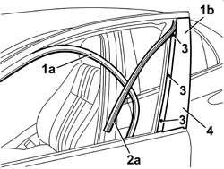

7005E50 FRONT SIDE DOOR PILLAR TRIM (ONE) LH OR RH - R.R.
- Path
- Procedures > 70 FITTINGS > 7005 PASSENGER COMPARTMENT FRONT SIDE DOORS > 7005E FRONT DOOR TRIM > 7005E50 FRONT SIDE DOOR PILLAR TRIM (ONE) LH OR RH - R.R.
- Kind
- repair procedure (removal / refitting; the operation number is the code)
- Applies to
- all engines; all production periods
- Interactive page
- https://sloeber94.github.io/elrnDB/alfa/159/en/#/939011139
Applies to: all engines; all production periods
 Removing
Removing
 Refitting
RefittingOp. 7005E12 CORNER COVER FOR ONE FRONT SIDE DOOR, LH OR RH - R.R.
Op. 7005E38 FRONT SIDE DOOR INTERIOR HANDLE- R.R.
Op. 7040E24 LOWER COURTESY LIGHT IN DOOR PANEL - R+R
Op. 7005E10 FRONT SIDE DOOR INTERIOR PANEL - R.R.
Op. 7005D30 FRONT SIDE DESCENDING WINDOW GLASS SCRAPER (INNER) (ONE), LEFT OR RIGHT - R.R.
Op. 7005D15 FRONT SIDE DOOR DESCENDING WINDOW GLASS (ONE) LEFT OR RIGHT - R.R
Op. 7005R30 ELECTRICALLY CONTROLLED DOOR MIRROR (ONE) - R+R
Op. 7005D26 FRONT SIDE DESCENDING WINDOW GLASS SCRAPER (OUTER) (ONE), LEFT OR RIGHT- R.R
1. Release the seal (1a) in the area of the pillar outer cover (1b).
2. Release the channel (2a) in the area of the pillar outer cover (1b).
3. Undo the bolts.
4. Remove the outer pillar cover.

Applies to: all engines; all production periods
Refitting
Removing- Check that the outer pillar cover is not damaged.
- Fit the outer pillar cover in place.
- Fit the channel in the area of the pillar outer cover.
- Fit the seal in the area of the pillar outer cover.
Op. 7005D26 FRONT SIDE DESCENDING WINDOW GLASS SCRAPER (OUTER) (ONE), LEFT OR RIGHT- R.R
Op. 7005R30 ELECTRICALLY CONTROLLED DOOR MIRROR (ONE) - R+R
Op. 7005D15 FRONT SIDE DOOR DESCENDING WINDOW GLASS (ONE) LEFT OR RIGHT - R.R
Op. 7005D30 FRONT SIDE DESCENDING WINDOW GLASS SCRAPER (INNER) (ONE), LEFT OR RIGHT - R.R.
Op. 7005E10 FRONT SIDE DOOR INTERIOR PANEL - R.R.
Op. 7040E24 LOWER COURTESY LIGHT IN DOOR PANEL - R+R
Op. 7005E38 FRONT SIDE DOOR INTERIOR HANDLE- R.R.
Op. 7005E12 CORNER COVER FOR ONE FRONT SIDE DOOR, LH OR RH - R.R.
Topics linked from this page (8)
- 7005D15 FRONT SIDE DOOR DESCENDING WINDOW GLASS (ONE) LEFT OR RIGHT - R.R
- 7005D26 FRONT SIDE DESCENDING WINDOW GLASS SCRAPER (OUTER) (ONE), LEFT OR RIGHT- R.R
- 7005D30 FRONT SIDE DESCENDING WINDOW GLASS SCRAPER (INNER) (ONE), LEFT OR RIGHT - R.R.
- 7005E10 FRONT SIDE DOOR INTERIOR PANEL - R.R.
- 7005E12 CORNER COVER FOR ONE FRONT SIDE DOOR, LH OR RH - R.R.
- 7005E38 FRONT SIDE DOOR INTERIOR HANDLE- R.R.
- 7005R30 ELECTRICALLY CONTROLLED DOOR MIRROR (ONE) - R+R
- 7040E24 LOWER COURTESY LIGHT IN DOOR PANEL - R+R